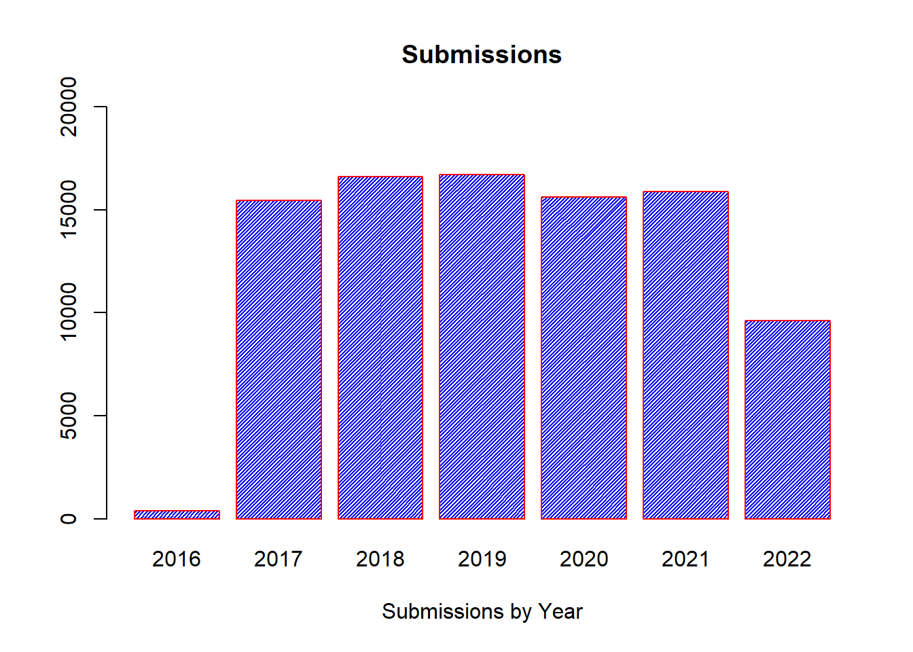
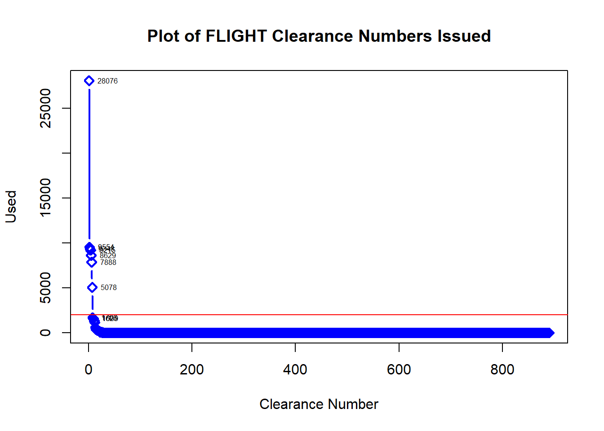

# INSTALL NECESSARY R PACKAGES
Packages <- c("tidyr", "dplyr", "tibble",
"ggplot2","corrplot", "skimr", "tm","english", "stringr")
invisible(lapply(lapply(Packages, rlang::quo_name),
library, character.only = TRUE))## Warning: package 'tidyr' was built under R version 3.6.3## Warning: package 'dplyr' was built under R version 3.6.3##
## Attaching package: 'dplyr'## The following objects are masked from 'package:stats':
##
## filter, lag## The following objects are masked from 'package:base':
##
## intersect, setdiff, setequal, union## Warning: package 'tibble' was built under R version 3.6.3## Warning: package 'corrplot' was built under R version 3.6.3## corrplot 0.84 loaded## Warning: package 'skimr' was built under R version 3.6.3## Warning: package 'tm' was built under R version 3.6.3## Loading required package: NLP## Warning: package 'NLP' was built under R version 3.6.3##
## Attaching package: 'NLP'## The following object is masked from 'package:ggplot2':
##
## annotate##
## Attaching package: 'english'## The following object is masked from 'package:NLP':
##
## words## Warning: package 'stringr' was built under R version 3.6.3##
## Attaching package: 'stringr'## The following object is masked _by_ '.GlobalEnv':
##
## words# IMPORT FLIGHT DATASET FILE
FLIGHT = read.csv("C:\\Users\\Kevin\\Desktop\\CodePractice\\APACS\\APACS_Study.csv", header = TRUE)
# MODIFY TO SIMPLIFY COLUMN NAMES OF FLIGHT DATASET
colnames(FLIGHT) = c('Submitted', 'Status', 'Clearance', 'ArrivalDate', 'Type', 'Airport', 'ICAO','Hazmat', 'Purpose')
# CLEAN CLEARANCE, TYPE, ICAO DATA VARIABLES TO REDUCE ERRORS
FLIGHT$Clearance = gsub('\\s+', '',FLIGHT$Clearance)
FLIGHT$Type = gsub('-', '',FLIGHT$Type)
FLIGHT$Type = toupper(FLIGHT$Type)
FLIGHT$ICAO = gsub('\\s+', '',FLIGHT$ICAO)
FLIGHT$ICAO = toupper(FLIGHT$ICAO)
# CREATE NEW COLUMN TO IDENTIFY YEAR OF TUPLE SUBMISSION
FLIGHT$Submitted = as.Date(FLIGHT$Submitted, "%m/%d/%y")
FLIGHT$ArrivalDate = as.Date(FLIGHT$ArrivalDate, "%m/%d/%y")
FLIGHT$year = FLIGHT$Submitted
FLIGHT$year = format(FLIGHT$year, format = "%Y")
FLIGHT$monthYear = FLIGHT$Submitted
FLIGHT$monthYear = format(FLIGHT$monthYear, format = "%y-%m")
# TOTAL NUMBER OF CLEARANCES IN EVALUATION
length(FLIGHT$Status)## [1] 90259# Simple Bar Plot of Flight Requests
barplot(table(FLIGHT$year),
main="Submissions",
xlab="Submissions by Year",
ylim = c(0,20000),
border = "red",
col = "blue",
density = 50)
# CREATE SEPARATE TABLE OF CLEARANCE NUMBER AND FREQUENCY
Primary.list = as.data.frame(table(FLIGHT$Clearance))
Primary.list = Primary.list %>% arrange(-Freq)
plot(Primary.list$Freq, type="b", col="blue", lwd=2, pch=5, ylab="Used", xlab="Clearance Number", main="Plot of FLIGHT Clearance Numbers Issued")
text(Primary.list$Freq[1:10], labels=Primary.list$Freq[1:10], pos = 4, cex = .5)
abline(h=2000, col="red")
# SUBSET PRIMARY LIST BY CLEARANCE NUMBER TOTALS OVER 2000 AND SORT
Primary.list = Primary.list %>%
filter(Freq > 2000) %>%
arrange(-Freq)
# NUMBER OF CLEARANCES APPROVED BUT NOT PROCESSED BY DAO
blank.list = Primary.list %>% filter(Var1 == "")
blank.list$Freq / length(FLIGHT$Status)## [1] 0.3110604# PULL NUMBER TO IDENTIFY HOW MANY PRIMARY BLANKET CLEARANCES USED
sum(Primary.list$Freq) - blank.list$Freq## [1] 49712round((sum(Primary.list$Freq) - blank.list$Freq)/length(FLIGHT$Status) * 100, digits = 2)## [1] 55.08sprintf("In the past 7 years, we have cleared %s requests using our primary clearance. This makes up %s percent of total clearances submitted to Germany", sum(Primary.list$Freq) - blank.list$Freq, round((sum(Primary.list$Freq) - blank.list$Freq)/length(FLIGHT$Status) * 100, digits = 2))## [1] "In the past 7 years, we have cleared 49712 requests using our primary clearance. This makes up 55.08 percent of total clearances submitted to Germany"sprintf("In the past 7 years, the 618 AOC submitted %s requests with NA as action required and used our primary blanket clearance to process their flights.", blank.list$Freq)## [1] "In the past 7 years, the 618 AOC submitted 28076 requests with NA as action required and used our primary blanket clearance to process their flights."# CREATE LIST OF PRIMARY CLEARANCE NUMBER
Clearance.list = as.vector(Primary.list$Var1)
# FILTER 1: FLIGHT DATASET BY PRIMARY CLEARANCE NUMBERS
blanket.list = filter(FLIGHT, Clearance %in% c(Clearance.list))
# PULL LENGTH OF FLIGHT OF ONLY PRIMARY CLARANCES AND BLANKS
length(blanket.list$Status)## [1] 77788round(length(blanket.list$Status)/length(FLIGHT$Status) * 100, digits = 2)## [1] 86.18# TABLE OF ICAO USED OVER 1K TIMES
ICAO.list = as.data.frame(table(blanket.list$ICAO)) %>% arrange(-Freq)
plot(ICAO.list$Freq, type="b", col="blue", lwd=2, pch=5, ylab="Listed", xlab="ICAO", main="Plot of ICAO listed in Blanket Clearances")
text(ICAO.list$Freq[1:10], labels=ICAO.list$Freq[1:10], pos = 4, cex = .75)
abline(h = 1000, col = "red")
ICAO.list = ICAO.list %>% filter(Freq > 2000)
# TOP AIRPORT IN DATASET AND OVERFLIGHT IN DATASET
ICAO.list[1,2] / length(blanket.list$Status)## [1] 0.4232144# CREATE LIST OF ICAO USED OVER 1K TIMES
ICAO.string = as.vector(ICAO.list$Var1)
# FILTER 2: BLANKET LIST DATASET OF ICAO USED OVER 1K TIMES
blanket.list = filter(blanket.list, ICAO %in% c(ICAO.string))
# FILTER 3: BLANKET LIST OF ONLY NON HAZMAT FLIGHTS
blanket.list = blanket.list %>% filter(Hazmat == FALSE)
# LENGTH OF LIST AFTER BLANKET, ICAO, HAZMAT FILTER; 80%
round(length(blanket.list$Status)/length(FLIGHT$Status)*100, digits = 2)## [1] 80.47ICAO.string## [1] "ETAR" "ETOU" "" "EDFH" "EDDS" "ETAD" "EDDN"sprintf("These six airfields and overflights make up %s percent of the total FLIGHT submitted in 7 years.", round(length(blanket.list$Status)/length(FLIGHT$Status)*100, digits = 2))## [1] "These six airfields and overflights make up 80.47 percent of the total FLIGHT submitted in 7 years."# TABLE OF OF AIRCRAFT TYPE AND FREQUENCY OF TYPE
type.list = as.data.frame(table(blanket.list$Type)) %>% arrange(-Freq)
# Creation of a Term Document Matrix for Aircraft Free text Submissions
doc = VCorpus(VectorSource(type.list$Var1))
transform = content_transformer(function(x, from, to) gsub(from, to, x))
temp = tm_map(doc, transform, "/", "")
temp = tm_map(temp, transform, "[^[:alnum:]]", "")
temp = tm_map(temp, transform, "[()]", "")
temp = tm_map(temp, transform, "200", " 200")
temp = tm_map(temp, transform, "300", " 300")
temp = tm_map(temp, transform, "400", " 400")
temp = tm_map(temp, transform, "500", " 500")
temp = tm_map(temp, transform, "800", " 800")
remove(doc)
dtm = TermDocumentMatrix(temp)
matrix = as.matrix(dtm)
words = sort(rowSums(matrix),decreasing=TRUE)
df = data.frame(word = names(words),freq=words)
df$word = toupper(df$word)
# FOR LOOP TO COUNT APPEARANCE OF EACH TYPE OF SUBMISSION
for (i in 1:length(df$word)){
a = blanket.list %>% filter(grepl(df$word[i], Type))
a = length(a$Status)
b = round((a / length(blanket.list$Status) * 100), digits = 2)
df$Count[i] = a
df$Percent[i] = b
}
# ARRANGE DATAFRAME LIST TO PLACE HIGHEST AT THE TOP
df = df %>% arrange(-Percent)
plot(df$Percent, type="b", col="green", lwd=2, pch=5, ylab="Aircraft Type Used", xlab = "Aircraft Type", main="Plot of Aircraft Inputs")
text(df$Percent, labels=df$Percent, pos = 4, cex = .5)
abline(h = 5.00, col = "red")
# FILTER AIRCRAFT LIST BY USING THE LEFT HAND RULE
Aircraft.list = df %>% filter(Percent > 4.00)
# TURN AIRCRAFT LIST INTO A VECTOR FOR FILTERING
AC.list = as.vector(Aircraft.list$word)
# REMOVE DUPLICATES TO REDUCE CONDITIONAL STATEMENTS
remove = c("C12U","C17A","C130J","UC35A","B747","B7474","B74740","B767","UC3","400","300", "C135", "KC135")
AC.list = AC.list[! AC.list %in% remove]
AC.list## [1] "C12" "UC35" "C17" "C130" "C017" "C21" "767" "747"# CREATE A DUPLICATE DATAFRAME TO RUN FILTER 4 FOR AIRCRAFT LIST
filtered.list = blanket.list
# FILTER 4: FLIGHT DATASET BY TYPE OF AIRCRAFT
blanket.list = data.frame()
for (i in 1:length(AC.list)){
D = filtered.list %>% filter(grepl(AC.list[i], Type))
blanket.list = rbind(blanket.list, D)
}
# FILTER 5: FLIGHT DATASET WITHOUT DV IN PURPOSE
blanket.list = blanket.list %>% filter(!str_detect(Purpose, "DV"))
# VIEW OF TABLE BY CLEARANCE NUMBER AND YEAR FOR COUNT
table(blanket.list$Clearance, blanket.list$year)##
## 2016 2017 2018 2019 2020 2021 2022
## 61 3712 3925 4302 3929 3479 2257
## MDCN/PER171360189 88 4784 0 0 0 0 0
## MDCN/PER181360054 0 257 5810 0 0 0 0
## MDCN/PER191360906 0 0 366 5557 100 0 0
## MDCN/PER201360024 0 0 0 166 3994 0 0
## MDCN/PER211360040 0 0 0 0 152 5664 0
## MDCN/PER221360036 0 0 0 0 0 197 2901# CREATE FLIGHT TOTAL BY YEAR FOR FUTURE TABLE
FLIGHT.total = as.data.frame(table(FLIGHT$year))
# CREATE CURRENT BLANKET LIST TOTAL FOR FUTURE TABLE
blanketList.total = as.data.frame(table(blanket.list$year))
# CREATION OF TABLE FOR PRESENTATION
result = cbind(FLIGHT.total,blanketList.total$Freq)
colnames(result) = c('Year','All','Selected')
result$Percent = round(result$Selected/result$All * 100, digits = 2)
result## Year All Selected Percent
## 1 2016 372 149 40.05
## 2 2017 15454 8753 56.64
## 3 2018 16603 10101 60.84
## 4 2019 16702 10025 60.02
## 5 2020 15629 8175 52.31
## 6 2021 15874 9340 58.84
## 7 2022 9625 5158 53.59median(result$Percent)## [1] 56.64# BUILDING OF JAVA ANGULAR STRING FOR SUBMISSION TO DOD
AC.list## [1] "C12" "UC35" "C17" "C130" "C017" "C21" "767" "747"ICAO.string## [1] "ETAR" "ETOU" "" "EDFH" "EDDS" "ETAD" "EDDN"c = 0
for (i in 1:length(AC.list)){
for (j in 1:length(ICAO.string)){
c = c + 1
string = sprintf("If 'Aircraft Type' contains (%s) & 'ICAO' = (%s) & 'Hazmat' = FALSE & 'Purpose' does not contain DV, then AUTO APPROVE",AC.list[i],ICAO.string[j])
print(string)
}
}## [1] "If 'Aircraft Type' contains (C12) & 'ICAO' = (ETAR) & 'Hazmat' = FALSE & 'Purpose' does not contain DV, then AUTO APPROVE"
## [1] "If 'Aircraft Type' contains (C12) & 'ICAO' = (ETOU) & 'Hazmat' = FALSE & 'Purpose' does not contain DV, then AUTO APPROVE"
## [1] "If 'Aircraft Type' contains (C12) & 'ICAO' = () & 'Hazmat' = FALSE & 'Purpose' does not contain DV, then AUTO APPROVE"
## [1] "If 'Aircraft Type' contains (C12) & 'ICAO' = (EDFH) & 'Hazmat' = FALSE & 'Purpose' does not contain DV, then AUTO APPROVE"
## [1] "If 'Aircraft Type' contains (C12) & 'ICAO' = (EDDS) & 'Hazmat' = FALSE & 'Purpose' does not contain DV, then AUTO APPROVE"
## [1] "If 'Aircraft Type' contains (C12) & 'ICAO' = (ETAD) & 'Hazmat' = FALSE & 'Purpose' does not contain DV, then AUTO APPROVE"
## [1] "If 'Aircraft Type' contains (C12) & 'ICAO' = (EDDN) & 'Hazmat' = FALSE & 'Purpose' does not contain DV, then AUTO APPROVE"
## [1] "If 'Aircraft Type' contains (UC35) & 'ICAO' = (ETAR) & 'Hazmat' = FALSE & 'Purpose' does not contain DV, then AUTO APPROVE"
## [1] "If 'Aircraft Type' contains (UC35) & 'ICAO' = (ETOU) & 'Hazmat' = FALSE & 'Purpose' does not contain DV, then AUTO APPROVE"
## [1] "If 'Aircraft Type' contains (UC35) & 'ICAO' = () & 'Hazmat' = FALSE & 'Purpose' does not contain DV, then AUTO APPROVE"
## [1] "If 'Aircraft Type' contains (UC35) & 'ICAO' = (EDFH) & 'Hazmat' = FALSE & 'Purpose' does not contain DV, then AUTO APPROVE"
## [1] "If 'Aircraft Type' contains (UC35) & 'ICAO' = (EDDS) & 'Hazmat' = FALSE & 'Purpose' does not contain DV, then AUTO APPROVE"
## [1] "If 'Aircraft Type' contains (UC35) & 'ICAO' = (ETAD) & 'Hazmat' = FALSE & 'Purpose' does not contain DV, then AUTO APPROVE"
## [1] "If 'Aircraft Type' contains (UC35) & 'ICAO' = (EDDN) & 'Hazmat' = FALSE & 'Purpose' does not contain DV, then AUTO APPROVE"
## [1] "If 'Aircraft Type' contains (C17) & 'ICAO' = (ETAR) & 'Hazmat' = FALSE & 'Purpose' does not contain DV, then AUTO APPROVE"
## [1] "If 'Aircraft Type' contains (C17) & 'ICAO' = (ETOU) & 'Hazmat' = FALSE & 'Purpose' does not contain DV, then AUTO APPROVE"
## [1] "If 'Aircraft Type' contains (C17) & 'ICAO' = () & 'Hazmat' = FALSE & 'Purpose' does not contain DV, then AUTO APPROVE"
## [1] "If 'Aircraft Type' contains (C17) & 'ICAO' = (EDFH) & 'Hazmat' = FALSE & 'Purpose' does not contain DV, then AUTO APPROVE"
## [1] "If 'Aircraft Type' contains (C17) & 'ICAO' = (EDDS) & 'Hazmat' = FALSE & 'Purpose' does not contain DV, then AUTO APPROVE"
## [1] "If 'Aircraft Type' contains (C17) & 'ICAO' = (ETAD) & 'Hazmat' = FALSE & 'Purpose' does not contain DV, then AUTO APPROVE"
## [1] "If 'Aircraft Type' contains (C17) & 'ICAO' = (EDDN) & 'Hazmat' = FALSE & 'Purpose' does not contain DV, then AUTO APPROVE"
## [1] "If 'Aircraft Type' contains (C130) & 'ICAO' = (ETAR) & 'Hazmat' = FALSE & 'Purpose' does not contain DV, then AUTO APPROVE"
## [1] "If 'Aircraft Type' contains (C130) & 'ICAO' = (ETOU) & 'Hazmat' = FALSE & 'Purpose' does not contain DV, then AUTO APPROVE"
## [1] "If 'Aircraft Type' contains (C130) & 'ICAO' = () & 'Hazmat' = FALSE & 'Purpose' does not contain DV, then AUTO APPROVE"
## [1] "If 'Aircraft Type' contains (C130) & 'ICAO' = (EDFH) & 'Hazmat' = FALSE & 'Purpose' does not contain DV, then AUTO APPROVE"
## [1] "If 'Aircraft Type' contains (C130) & 'ICAO' = (EDDS) & 'Hazmat' = FALSE & 'Purpose' does not contain DV, then AUTO APPROVE"
## [1] "If 'Aircraft Type' contains (C130) & 'ICAO' = (ETAD) & 'Hazmat' = FALSE & 'Purpose' does not contain DV, then AUTO APPROVE"
## [1] "If 'Aircraft Type' contains (C130) & 'ICAO' = (EDDN) & 'Hazmat' = FALSE & 'Purpose' does not contain DV, then AUTO APPROVE"
## [1] "If 'Aircraft Type' contains (C017) & 'ICAO' = (ETAR) & 'Hazmat' = FALSE & 'Purpose' does not contain DV, then AUTO APPROVE"
## [1] "If 'Aircraft Type' contains (C017) & 'ICAO' = (ETOU) & 'Hazmat' = FALSE & 'Purpose' does not contain DV, then AUTO APPROVE"
## [1] "If 'Aircraft Type' contains (C017) & 'ICAO' = () & 'Hazmat' = FALSE & 'Purpose' does not contain DV, then AUTO APPROVE"
## [1] "If 'Aircraft Type' contains (C017) & 'ICAO' = (EDFH) & 'Hazmat' = FALSE & 'Purpose' does not contain DV, then AUTO APPROVE"
## [1] "If 'Aircraft Type' contains (C017) & 'ICAO' = (EDDS) & 'Hazmat' = FALSE & 'Purpose' does not contain DV, then AUTO APPROVE"
## [1] "If 'Aircraft Type' contains (C017) & 'ICAO' = (ETAD) & 'Hazmat' = FALSE & 'Purpose' does not contain DV, then AUTO APPROVE"
## [1] "If 'Aircraft Type' contains (C017) & 'ICAO' = (EDDN) & 'Hazmat' = FALSE & 'Purpose' does not contain DV, then AUTO APPROVE"
## [1] "If 'Aircraft Type' contains (C21) & 'ICAO' = (ETAR) & 'Hazmat' = FALSE & 'Purpose' does not contain DV, then AUTO APPROVE"
## [1] "If 'Aircraft Type' contains (C21) & 'ICAO' = (ETOU) & 'Hazmat' = FALSE & 'Purpose' does not contain DV, then AUTO APPROVE"
## [1] "If 'Aircraft Type' contains (C21) & 'ICAO' = () & 'Hazmat' = FALSE & 'Purpose' does not contain DV, then AUTO APPROVE"
## [1] "If 'Aircraft Type' contains (C21) & 'ICAO' = (EDFH) & 'Hazmat' = FALSE & 'Purpose' does not contain DV, then AUTO APPROVE"
## [1] "If 'Aircraft Type' contains (C21) & 'ICAO' = (EDDS) & 'Hazmat' = FALSE & 'Purpose' does not contain DV, then AUTO APPROVE"
## [1] "If 'Aircraft Type' contains (C21) & 'ICAO' = (ETAD) & 'Hazmat' = FALSE & 'Purpose' does not contain DV, then AUTO APPROVE"
## [1] "If 'Aircraft Type' contains (C21) & 'ICAO' = (EDDN) & 'Hazmat' = FALSE & 'Purpose' does not contain DV, then AUTO APPROVE"
## [1] "If 'Aircraft Type' contains (767) & 'ICAO' = (ETAR) & 'Hazmat' = FALSE & 'Purpose' does not contain DV, then AUTO APPROVE"
## [1] "If 'Aircraft Type' contains (767) & 'ICAO' = (ETOU) & 'Hazmat' = FALSE & 'Purpose' does not contain DV, then AUTO APPROVE"
## [1] "If 'Aircraft Type' contains (767) & 'ICAO' = () & 'Hazmat' = FALSE & 'Purpose' does not contain DV, then AUTO APPROVE"
## [1] "If 'Aircraft Type' contains (767) & 'ICAO' = (EDFH) & 'Hazmat' = FALSE & 'Purpose' does not contain DV, then AUTO APPROVE"
## [1] "If 'Aircraft Type' contains (767) & 'ICAO' = (EDDS) & 'Hazmat' = FALSE & 'Purpose' does not contain DV, then AUTO APPROVE"
## [1] "If 'Aircraft Type' contains (767) & 'ICAO' = (ETAD) & 'Hazmat' = FALSE & 'Purpose' does not contain DV, then AUTO APPROVE"
## [1] "If 'Aircraft Type' contains (767) & 'ICAO' = (EDDN) & 'Hazmat' = FALSE & 'Purpose' does not contain DV, then AUTO APPROVE"
## [1] "If 'Aircraft Type' contains (747) & 'ICAO' = (ETAR) & 'Hazmat' = FALSE & 'Purpose' does not contain DV, then AUTO APPROVE"
## [1] "If 'Aircraft Type' contains (747) & 'ICAO' = (ETOU) & 'Hazmat' = FALSE & 'Purpose' does not contain DV, then AUTO APPROVE"
## [1] "If 'Aircraft Type' contains (747) & 'ICAO' = () & 'Hazmat' = FALSE & 'Purpose' does not contain DV, then AUTO APPROVE"
## [1] "If 'Aircraft Type' contains (747) & 'ICAO' = (EDFH) & 'Hazmat' = FALSE & 'Purpose' does not contain DV, then AUTO APPROVE"
## [1] "If 'Aircraft Type' contains (747) & 'ICAO' = (EDDS) & 'Hazmat' = FALSE & 'Purpose' does not contain DV, then AUTO APPROVE"
## [1] "If 'Aircraft Type' contains (747) & 'ICAO' = (ETAD) & 'Hazmat' = FALSE & 'Purpose' does not contain DV, then AUTO APPROVE"
## [1] "If 'Aircraft Type' contains (747) & 'ICAO' = (EDDN) & 'Hazmat' = FALSE & 'Purpose' does not contain DV, then AUTO APPROVE"